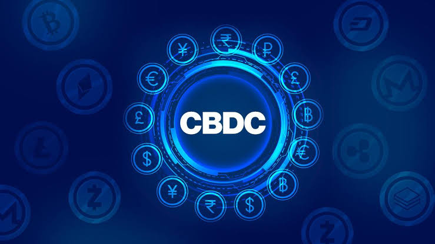

El futuro. ¿Qué nos espera?
CBDCs (El contraataque de los gobiernos)
CBDC significa Central Bank Digital Currency, basicamente es la moneda digital de un banco central.
A diferencia de las criptomonedas tradicionales como Bitcoin, no es un activo descentralizado ni volátil, sino dinero de curso
legal con el mismo valor que el efectivo físico.

Ventajas:
- Reduce costos de transacción y tiempos de liquidación.
- Permite a personas no bancarizadas acceder a pagos digitales mediante billeteras móviles sin requerir una cuenta bancaria tradicional.
- Facilita la distribución rápida de subsidios o ayudas económicas estatales.
Desventajas:
- Al ser emitidas por el Estado, las transacciones pueden ser monitoreadas.
- Las autoridades pueden imponer restricciones de vencimiento del dinero o limitaciones de uso en ciertos comercios.
- Una infraestructura centralizada se convierte en un objetivo crítico para ciberataques.
| Caracteristicas | Criptos (BTC, ETH, SOL, XMR, etc) | Stablecoins (USDC, USDT, etc) | CBDCs |
|---|---|---|---|
| Emisor | Descentralizado y de codigo abierto | empresas privadas (ej. Tether, Circle, etc) | Banco Central del estado |
| Volatilidad | Alta | Baja (esta anclada a una moneda fiat) | Ninguna frente a la moneda local |
| Privacidad | Seudónimo / Anónimo | Depende del intermediario / KYC | Trazable y regulado por el Estado |
| Tecnologia | Blockchain pública | Blockchain pública o privada | DLT o bases de datos centralizadas |
Es el contraataque de los gobiernos?
Cuando las criptomonedas y las stablecoins privadas empezaron a ganar terreno, los bancos
centrales se dieron cuenta de que estaban perdiendo el monopolio sobre la emisión y el control del dinero.
Por eso se crearon las CBDCs:
- Si la gente empieza a usar Bitcoin o stablecoins en el día a día, la política monetaria de un país (tipos de interés, inflación,
emisión) pierde eficacia. Con una CBDC, el Estado busca mantener el control del sistema de pagos.
- Una CBDC le da al Estado visibilidad directa sobre los flujos de dinero en tiempo real, facilitando el cobro de impuestos, el
cumplimiento normativo y evitando la evasión o el financiamiento no regulado.
Ejemplos reales:
- Sand Dollar (Bahamas): Fue la primera CBDC lanzada en el mundo (octubre
de 2020). Permite a los residentes realizar pagos y transferencias desde el celular.
- DCash (Unión Monetaria del Caribe Oriental): Lo usan paises como Antigua y Barbuda, Granada,
San Cristóbal y Nieves, etc para transacciones digitales instantáneas sin comisiones entre usuarios de las islas caribeñas.
- JAM-DEX (Jamaica): Fue implementada para ofrecer una alternativa digital al efectivo físico,
facilitando microcréditos y transferencias de bajo costo.
- e-CNY (China): Fue el proyecto más grande del mundo pero ahora ya es realidad. Se ha probado masivamente en ciudades principales
(Shanghái, Pekín, Shenzhen) mediante billeteras móviles para transporte público, compras en supermercados, pago de salarios a empleados públicos, etc.
- DREX (Brasil): Es el real brasileño en formato digital, con el mismo valor que el dinero físico y
está diseñado para funcionar con smart contracts para: compra y venta de auto, transacciones inmobiliarias, facilitar la solicitud de préstamos dejando activos digitales o tokens
como garantía de manera automática, etc.
IA + Blockchain
Hablar de IA con blockchain es, basicamente, hablar de 2 temas que ya son muy complejos por si solos pero, si los unimos, obtendremos:
capacidad analítica, predictiva y de toma de decisiones por parte de la IA, sumado a la descentralización, inmutabilidad y seguridad de la blockchain.
Como sabemos, la IA realiza cálculos pesados. Para integrarla a la blockchain sin que colapse, los expertos han dividido la arquitectura en capas.
En lugar de intentar "meter la IA dentro del bloque", la estrategia es procesar fuera de la cadena (off-chain) y verificar o
coordinar dentro de la cadena (on-chain):
Verificación Criptográfica:
Meter un modelo de machine learning o una red neuronal dentro de una máquina virtual
como EVM es muy mala idea (se volverá caro y lento). Lo que se hace es:
- Hacer el cálculo fuera de la red (en un servidor externo o GPU convencional).
- El sistema genera una prueba criptográficaque demuestra matemáticamente que la inferencia fue calculada con el modelo exacto y los datos correctos, sin alterar nada.
La blockchain solo verifica esa pequeña prueba matemática en milisegundos y con un costo de gas mínimo.
Redes de cómputo descentralizadas:
El entrenamiento de IA requiere hardware especializado que actualmente concentran pocas empresas tecnológicas.
En lugar de eso, redes descentralizadas agrupan GPUs distribuidas a nivel global.
Proyectos como Bittensor o Akash reemplazan la "minería tradicional" por pruebas de trabajo donde los nodos compiten proporcionando respuestas de IA, evaluándose
entre pares y recibiendo recompensas en tokens según la precisión y calidad de su modelo.
Billeteras programables:
Desarrolladores configuran billeteras con límites de gasto, listas de protocolos y reglas de seguridad para que una IA compre cosas, pague servidores
o ejecute estrategias financieras sin intervención humana directa. Básicamente, tu billetera cobra vida.
Seguridad y Auditoría de Smart Contracts
Se puede usar la IA para analizar vulnerabilidades de código en tiempo real antes y después del despliegue en la red principal.